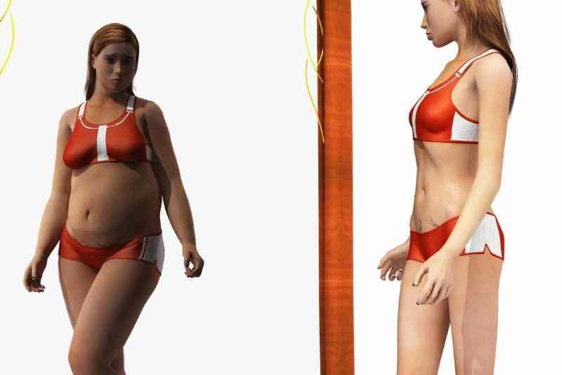

My First Post Chrat
So this is my third year of college and hopefully my last year of college and I'm hoping to graduate with first class honors. How do I plan to acheive this? By locking in of course but as they say all work and no play make Jill a dull girl. However, instead of going to parties and having the worst time ever, I want to spend this year going to places like the beach and so on and having the best time investing in myself.
I feel like as university students we have a constant FOMO which took me over last year and I ended up going out all the time when I really didn't want to. Either way that's my two cents and to all final year students don't fall for the FOMO you have a 1000 different ways to have fun. When we or maybe let me speak from personal experience getting caught up in what everyone else is doing instead of focusing on and doing what I find fun was never the least bit fun.
My Take on Gym Culture
It's being said that this new generation is obsessed with health. We are deeply immersed in gym culture, going to the gym at least 3 times for the week, meal prep etc. I would commend this but alot of persons even those who are devoted to their 'health' say that this is due to body dysmorphia. So, although it is highly commendable that we are are generation dedicated to health especially given the state of society where just a little while ago obesity was at an all time high I can't commend it because it comes from a deep seeded mental issue held by alot of members of my generation. Many persons have a distorted view of themselves and believe going to the gym will bring them to their 'dream body'.
Society today has an obsession with body image and the perfect body that many persons cannot attain. In my opinion gym culture would have been a much more beautiful thing if it were simply to keep healthy rather than persons thinking they're so unattractive that they need to work overtime to attain the perfect body. This isn't even just seen in gym culture but also BBL culture persons are so unhappy with their bodies it has become custom to do any and everything to change your body to meet perfection. At this point every generation needs intense therapy.